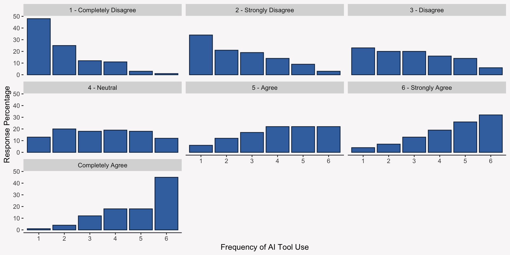

# A tibble: 5,000 × 4
pos_attitude_ai freq_use_ai pos_attitude_ai_label freq_use_ai_label
<int> <dbl> <chr> <chr>
1 4 4 Neutral Fairly Often
2 6 6 Strongly Agree All the time
3 7 3 Completely Agree Occasionally
4 7 6 Completely Agree All the time
5 4 3 Neutral Occasionally
6 5 4 Agree Fairly Often
7 5 6 Agree All the time
8 3 4 Disagree Fairly Often
9 3 5 Disagree Very Often
10 4 4 Neutral Fairly Often
# ℹ 4,990 more rowsAn Introduction to Simple Regression
Schedule for Today
- Talk about stats for ~75 mins (5 PM - 6:15 PM ET)
- Break for 5 minutes
- R Introduction / Hands-on coding for 40 mins (6:20 PM - 7:00 PM ET)
Overview
- A quick review of last week
- Overview of conditional distributions & statistics
- Introduction to Simple Regression
- R Intro
Goals
- Develop an understanding of simple regression
- Write your first R script
Quick Review of Terminology
- Mean of X: \(\overline{X}\) or \(E[X]\)
- Variance of X: \(\sigma^{2}_{x}\) or \(Var(X)\)
- Standard Deviation of X: \(\sigma_{x}\) or \(S_{X}\)
- Covariance of X & Y: \(Cov(XY)\)
- Correlation of X & Y: \(r_{xy}\)
- Population Parameter: \(\beta\) or any other Greek letter
- Population Estimate: \(\hat{\beta}\)
What is a Statistical Model?
A statistical model is an approximation of some random process that uses probability theory and other mathematical tools to describe the process.
In your own research, you will likely rely on theory to develop your own statistical models.
Why Do Re Care About Statistical Modeling?
In research and practice, you will likely come up with questions or hypotheses of the form:
We can apply the models we will talk about in class to our data in order to empirically test our hypotheses (or answer our questions). These models allow us to make data-driven evaluations of our theories.
Example Hypothesis
Your organization has just implemented a new generative AI tool (fancy chat bot) to help improve the efficiency of the organizations sales force. Sales employees, however, have adopted the technology at different rates.
You have been asked to understand if an employee’s general attitude toward AI is related to how frequently they are using the new AI tool using two survey questions:
Much of society will benefit from a future full of Artificial Intelligence.
In the past two months, how frequently have you used the organization’s new AI powered chat bot?
View our Dataset
Exploring our Data
Visualizing the Relationship Between Two Variables
We can use a scatter plot to visually explore the relationship between our two variables. Why does it look so odd?

Improving our Scatter Plot
We can use an R function called geom_jitter to add a bit of random noise to each of our data points, which improves the usefulness of scatter plots when working with discrete data like survey responses.
Conditional Distributions
Conditional distributions are distributions of one variable, Y, conditional (fixed) on a value of one or more additional variables.
Conditional Statistics
Conditional statistics are statistics computed from conditional distributions. The characteristics of a distribution (mean, variance, etc.) can change based on the values of another variable.
Linear regression models are largely concerned with two conditional statistics:
- Conditional Mean (or Expectation): \(E[Y|X]\)
- Conditional Variance: \(\sigma^2_{Y|X}\)
Conditional Statistics Visualized
Modeling Mean Dependence
In statistics, we are mostly interested in modeling mean dependence—this is why statistics has been referred to as “the science of averages.”
Every statistical model we will use in this class is ultimately trying to find a function that best describes how the mean of some variable Y changes across the values of some set of variables, X.
\[E[Y|X] = f(X)\]
Visualizing Mean Dependence
Measuring Mean Dependence with Covariance & Correlation
Two of the most basic measures of the linear mean dependence between two variables are the covariance and correlation:
\[Cov(X, Y)=\frac{\Sigma{(X - \overline{X})(Y-\overline{Y})}}{N}\] \[r_{XY}=\frac{Cov(X,Y)}{S_{X}S_{Y}}\]
Measuring Mean Dependence with a Linear Function (a Line)
A different, but related way, to measure mean dependence is to choose a linear function (a line) to describe how the mean of \(Y\) changes across values of \(X\).
\[E[Y|X] = \beta_{0}+\beta_{1}X_{1}\]
\(\beta_{0}\): The intercept of the line
\(\beta_{1}\): The slope of the line, which is a measure of linear mean dependence
Which Line to Choose?
We could, however, choose many different lines. How do we determine what the “best” line is? First, we have to define exactly what we mean by “best.”
Errors of Estimate (or Prediction Errors)
We say that the “best” line is the line that minimizes the squared distance between our outcome variable, \(Y\), and what our line predicts that outcome variable to be, \(\hat{Y}\), on average:
\[SS_{error}=\Sigma(Y_{i}-\hat{Y}_{i})^2=\Sigma(e^{2}_{i})\]
\[\hat{Y}_{i}=\beta_{0}+\beta_{1}X_{i}\]
We call this the sum of squared error.
Linear Regression: The Line that “Best” Fits your Data
Linear regression is the statistical method that estimates the “best” fitting line by minimizing the sum of squared errors (\(SS_{error}\)).
There is no other line that will produce a smaller value of \(SS_{error}\)!
The Simple Regression Model
The simple regression model is just a linear regression model with one independent variable.
\[Y=\beta_0+\beta_1X_1+\epsilon\]
- \(\beta_0\): The expected value (mean) of Y when X = 0.
- \(\beta_1\): The average change in Y for a one-unit increase in X.
- \(\epsilon\): Variation in Y that is not explained by our model—unexplained variance.
Estimating the Regression Coefficients
We will never know the population values of the regression coefficients (\(\beta_0\) & \(\beta_1\)), but we can use our data to estimate them:
\[\hat{\beta}_1=\frac{Cov(X,Y)}{Var(X)}\]
\[\hat{\beta}_0=\overline{Y}-\hat{\beta}_1\overline{X}\]
Estimating your Model Using lm
Call:
lm(formula = freq_use_ai ~ pos_attitude_ai, data = data_ai)
Residuals:
Min 1Q Median 3Q Max
-3.9683 -1.0050 0.0072 1.0317 3.9950
Coefficients:
Estimate Std. Error t value Pr(>|t|)
(Intercept) 1.51112 0.05575 27.11 <2e-16 ***
pos_attitude_ai 0.49388 0.01285 38.45 <2e-16 ***
---
Signif. codes: 0 '***' 0.001 '**' 0.01 '*' 0.05 '.' 0.1 ' ' 1
Residual standard error: 1.483 on 4998 degrees of freedom
Multiple R-squared: 0.2282, Adjusted R-squared: 0.2281
F-statistic: 1478 on 1 and 4998 DF, p-value: < 2.2e-16Interpreting the Coefficients as Comparisons
The most appropriate way to interpret the slope coefficient (\(\beta_1\)) is as a comparison. In our example:
Comparing employees who differ in their attitudes towards AI by one point, the average difference in the frequency with which those employees use the AI tool is 0.49 points.
Visualizing the Comparison
Regression Coefficients & the Strength of the Relationship
It is very difficult to determine the strength of the relationship between a dependent variable, Y, and an independent variable, X, using just the regression slope, \(\beta_1\).
It is difficult because the magnitude of \(\beta_1\) depends on the scale of both the dependent and independent variable, so you can artificially change the magnitude of the slope by changing the scale of your variables.
Measuring Strength with Correlation Coefficient
You can use the correlation between the independent and dependent variable to estimate how strongly related the two variables are.
In simple linear regression there is a straightforward relationship between a correlation and a regression coefficient:
\[r_{XY}=\beta_1\times\frac{SD_X}{SD_Y}\]
Measuring Strength with Scaled Variables
If you can estimate a regression model using the scaled (standardized) independent and dependent variables, then you can use the magnitude of \(\beta_1\) to judge the strength of the relationship between the independent and dependent variable.
Scaling or standardizing a variable transforms the mean of the variable to 0 and its variance and SD to 1:
\[\text{Scaled X = }Z_X=\frac{X-\overline{X}}{SD_X}\]
The Two Approaches will Lead to the Same Answer
data_ai <-
data_ai |>
dplyr::mutate(
pos_attitude_ai_scale = (pos_attitude_ai - mean(pos_attitude_ai)) / sd(pos_attitude_ai),
freq_use_ai_scale = scale(freq_use_ai)[,1]
)
mod_scale <- lm(freq_use_ai_scale ~ pos_attitude_ai_scale, data_ai)
reg_coef <- mod_scale$coefficients[2] |> round(2)
cor_coef <- cor(data_ai$pos_attitude_ai, data_ai$freq_use_ai) |> round(2)
tibble::tibble(`Reg. Coef.` = reg_coef, `Corr. Coef` = cor_coef)# A tibble: 1 × 2
`Reg. Coef.` `Corr. Coef`
<dbl> <dbl>
1 0.48 0.48Is Your Effect Significant?
Often researchers determine the significance of their coefficients by comparing the coefficients to a null distribution with a mean of 0.
The p-value tells you the probability of seeing an estimate equal to or greater than the absolute value of your estimate given that the true effect is 0.
# A tibble: 2 × 5
term estimate std.error statistic p.value
<chr> <dbl> <dbl> <dbl> <dbl>
1 (Intercept) 1.51 0.06 27.1 4.39e-151
2 pos_attitude_ai 0.49 0.01 38.4 1.56e-283How Well Does Your Model Fit?
You will often want to determine how well your model fits your data—how well does your model predict your observed outcome, Y.
To determine this, we will partition our observed outcome into three additive pieces:
\[Y_{i} = \underbrace{\overline{Y}}_\text{Mean Component}+\underbrace{(\hat{Y}_{i}-\overline{Y})}_\text{Model Component}+\underbrace{(Y_{i} - \hat{Y}_{i})}_\text{Error Component}\]
Looking at the Model Component
The model component tells us if our model is better able to predict our outcome than its own mean.
If we take a closer look at this component, what happens to it as \(\hat{\beta}_1\) becomes a perfect predictor of Y? Decreases to 0?
\[\hat{Y}_{i}-\overline{Y}\\=\hat{\beta}_0+\hat{\beta}_1X_{i}-\overline{Y}\\=\overline{Y}-\hat{\beta}_1\overline{X}+\hat{\beta}_{1}X_{i}-\overline{Y}\\=\hat{\beta}_{1}(X_{i}-\overline{X})\]
Looking at the Error Component
The error component or residual plays an important role in linear regression. It tell us the extent to which our model is able to predict our outcome.
If we take a closer look at this component, what happens to it as \(\hat{\beta}_1\) becomes a perfect predictor of Y? Decreases to 0?
\[Y_{i}-\hat{Y}_i\\=Y_{i}-\hat{\beta}_0-\hat{\beta}_1X_{i}\\=Y_{i}-\overline{Y}-\hat{\beta}_{1}(X_{i}-\overline{X})\]
Partitioning our Observed Score Variance
We can use the model and error components to summarize the variability in our outcome by partitioning it into variability because of our model and variability because of error and other unexplained causes.
\[\underbrace{\Sigma(Y_{i}-\overline{Y})^2}_\text{Total SS}=\underbrace{\Sigma(\hat{Y}_i-\overline{Y})^2}_\text{SS Model}+\underbrace{\Sigma(Y_i-\hat{Y}_i)}_\text{SS Error}\]
\[\hat{\sigma}^2_Y=\hat{\sigma}^2_{model}+\hat{\sigma}^2_{error}\]
Measuring Model Fit with R-Squared
Using partitioned variance we can compute a statistic, \(R^2\), that tells us how well your model fits your data overall.
\[R^2 = \frac{\hat{\sigma}^2_{model}}{\hat{\sigma}^2_{Y}}=1-\frac{\hat{\sigma}^2_{error}}{\hat{\sigma}^2_Y} \]
You can interpret \(R^2\) as the proportion of variance in your observed outcome that is explained by your model.
R-Squared In Our Example
23% of the variance in the frequency with which the sales representatives use the new AI tool can be explained by their general attitudes toward AI.
Call:
lm(formula = freq_use_ai ~ pos_attitude_ai, data = data_ai)
Residuals:
Min 1Q Median 3Q Max
-3.9683 -1.0050 0.0072 1.0317 3.9950
Coefficients:
Estimate Std. Error t value Pr(>|t|)
(Intercept) 1.51112 0.05575 27.11 <2e-16 ***
pos_attitude_ai 0.49388 0.01285 38.45 <2e-16 ***
---
Signif. codes: 0 '***' 0.001 '**' 0.01 '*' 0.05 '.' 0.1 ' ' 1
Residual standard error: 1.483 on 4998 degrees of freedom
Multiple R-squared: 0.2282, Adjusted R-squared: 0.2281
F-statistic: 1478 on 1 and 4998 DF, p-value: < 2.2e-16